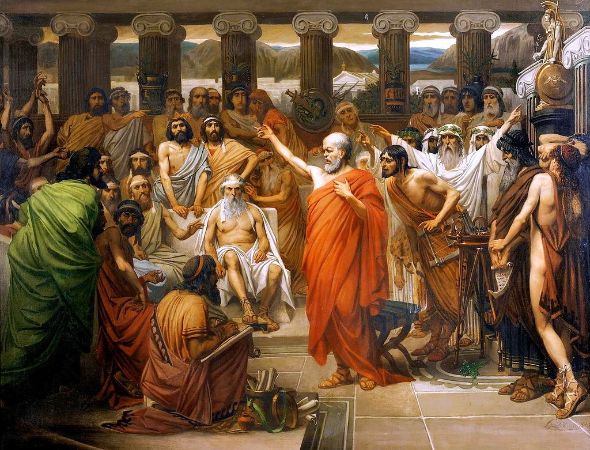

Phenomena of life and reason
Reid Saewert
What is ancient Greek Philosophy and how has the impact of the ancient Greeks' famous thinkers affected our outlook on modern life? The greeks who made a name for themselves through philosophy include but are not limited to figures such as Aristotle, Socrates, Epicurus, Plato, Diogenes and one of my favorite Epictetus.

One area that Epictetus excelled in, in the many areas of philosophy is Stoicism, which can be essentially dumbed down to the art of not being affected by what cannot be controlled by oneself. For example, one may have a loved one in their family pass away, this is an uncontrollable thing and the nature of life. Epictetus tells us to not let this destroy us internally emotionally as it would hurt someone very deeply. We learn from him to not be upset over what cannot be controlled and to control our reactions such as how we act in accordance to sad news as such. Many think that Stoicism is the art of “not feeling” which couldn't be more wrong. It is a way of life that lets one be free from what they cannot control, it lets one recognize what they can or cannot do in order to be better for themselves or others in any accordance.
Philiosophy beyond thought
Beyond the scope of thought of philosophy, and when exploring the physical side of beliefs. It can be a difficult introduction to ancient ideas of how physician life came to be on earth, what we are made of and how we operate both physically, as well as through thought and spirit which is made of great importance. Many of the schools of philosophy believed our soul is also in fact corporeal as we are physical beings so everything inside us must be as well. According to another popular stoic philosopher adjacent to Greece in Ancient Rome was Marcus Aurelius. Famous to this dday for his book of meditations highlighting and shaping stoic philosophy during his time of ruling many years ago. He believes our breath feeds our body and is our soul essentially. We take in soul through natural life and it enables our functions of soul, such as our 5 senses and other parts of us. This is how, as humans, our life and spirit was rationalized in non-modern times, and though many years have passed and medical leaps throughout history have passed soul and spirit with no explanation cannot be disregarded as an important part of our life as we all know and yet have no explanation for.